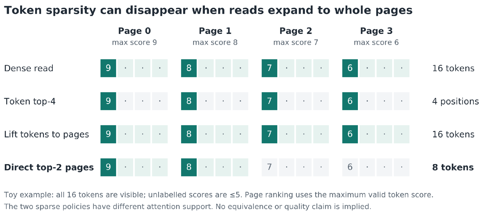
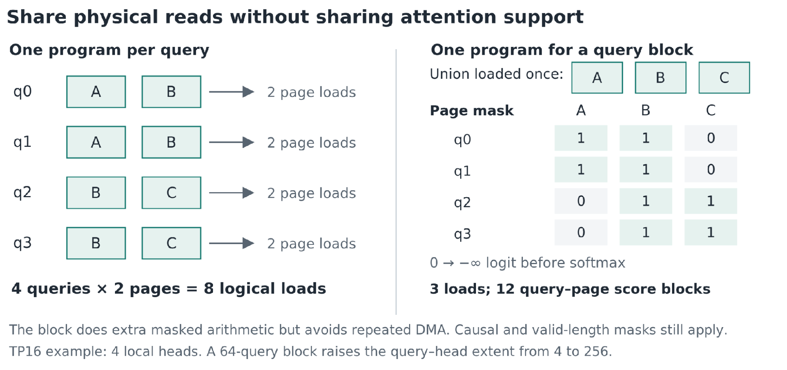
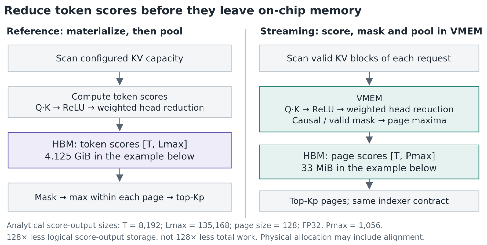
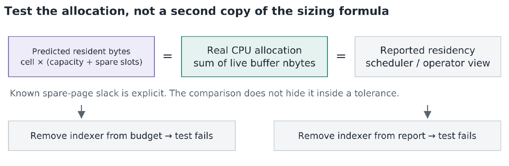
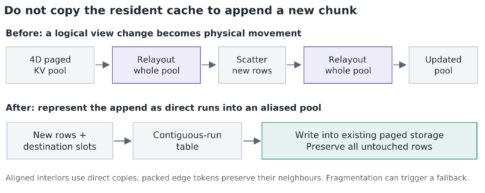

GLM-5.2自带学习索引器，但SGLang-JAX最初还是走稠密MLA缓存，直接把索引器的输出扔了。MoonMath这篇是把稀疏真正落到TPU上的施工记录：一连串PR，从分页稀疏decode到流式索引器、查询块、写回优化。下文拆解每一步的瓶颈与收益。
SemiAnalysis最近详细介绍了Google的TPU推理栈，主题是把TPU做成Google生态之外推理服务的一等公民。背景文章接在TPU-Inference系列优化之后，TPU-Inference是公开的vLLM TPU后端，目标是在TPU v7 Ironwood上高效跑Qwen3.5-397B。
这篇是SGLang生态的互补视角。不用TPU-Inference，而用SGLang-JAX，以DSA稀疏为具体例子，讲GLM-5.2推理的持续优化。下文是一连串PR的施工记录，逐步提升GLM-5.2服务性能，展示实现怎么演进、收益从哪来。其中几个已合并PR有MoonMath的贡献，这也是选这个案例的原因。例子用GLM-5.2，技术同样适用于GLM-5.3。
GLM-5.2本来就有学习索引器和层间共享调度。SGLang-JAX最初能加载模型，但还是遍历稠密MLA缓存，把索引器的输出丢掉。
优化路线：第一步吃掉索引器的输出，后面几步让稀疏执行在内存、计算、服务上都高效。每一步都暴露下一个瓶颈：稠密读让位给页面读，页面读让位给过大的索引器中间量，再到重复页面抓取，最后是追加时整个缓存被搬动。
多头隐注意力把历史token的KV压缩；DeepSeek稀疏注意力决定注意力读哪些位置。GLM-5.2存512维KV隐向量加64维位置键分量，64个注意力头共享。索引器是32个头、宽128，checkpoint预算2048 token。几个prefill实验用4096 token预算，即32个128 token的页，和checkpoint默认设置不可互换。
索引器用ReLU变换后query-key点积的加权和给候选键打分。分数决定选哪些位置，不决定最终注意力概率。IndexShare跨层复用结果：21个完整层刷新，57个共享层复用到下一个完整层为止。这里的完整指索引器归属，不是稠密注意力。
TPU路径用吸收式MLA：键投影搬到query上，值投影跟在隐向量的加权和之后。避免把缓存的隐向量展开成每头键值。目标是少读已有的压缩缓存。没被选中的条目要留给后面的query，索引器保留自己的键历史。注意力缩放绑在原始的192加64 query/key维度，不是吸收后的576维表示。
所以要的是从现有压缩缓存里少读，而不是换缓存。没选中的行完整保留，索引器的键历史独立维护。
稀疏decode给现有MLA kernel一个更短的物理页列表。kernel直接从原始缓存读，省掉HBM gather；新token的页显式处理，保证缓存写落到正确位置。
token top-k不是页top-k。分散的高分token可能碰到大多数页，把这些页的每个token都读进来，注意力支撑就被撑大了。直接的页预算改为按每页最高合法token分数给页排序。四个四token页里各一个高分token的例子：token top-k点名4个位置，页展开读16个，两页预算读8个。页预算限定了读量，但近似变了。因果与有效长度掩码必须在取页最大值之前，否则不可见token会把它的页抬上去，挤掉合法页。
配对测稠密与分页稀疏decode，两边都开AOT分发：110k上下文的早期decode从46.2降到17.1 ms/token，选128页。1k上下文稀疏反而更慢，13.7对11.8 ms/token：索引器与元数据开销需要省下足够的注意力工作才划算。有界页预算没让decode与上下文无关，索引器还要扫候选键。

图1是玩具例子：整页展开能把token级稀疏抹掉，固定页预算减少读量但选了不同的注意力支撑。
融合稀疏prefill把新隐行写进分页缓存，再用在线softmax遍历选中的页：工作形状静态，地址动态。T个query、每query Kp页、每页b token，选中注意力的计算量约O(T × Kp × b)，不计头与特征维。
TP16下每设备只剩4个注意力头。per-query kernel把充裕的选中键轴放在lane维，小的头轴放在sublane维，避免过度padding。早期的三个完整索引器层走了稠密路，留下三个共享跟随层没有页列表。把稀疏路由补进这六层区域，路径就通了：配对的48k prefill从155.7秒稠密降到38.4秒稀疏，再到28.7秒完整路由。
单请求kernel变成服务路径，靠每个query自带请求ID、绝对位置、有效KV长度、页表基址。缓存前缀与分块都是extend操作，decode可以是一个query的extend。前缀长P、本地偏移i，因果用P加i，不是在每块重置偏移。
这些元数据让变长请求共享一个执行网格，不用单独launch，也不用把每个请求padding到最长。前缀复用省重算，分块限定活跃query数。索引器的页号仍要经正确请求的页表翻译。打包与前缀复用不改变query能读哪些键。下一个瓶颈在上游：索引器还在给预留容量打分。
参考的prefill索引器给配置的全部KV范围打分，先把token分数物化出来再池化成页分数。流式路径读有效KV块，算分、加掩码、在片上VMEM里池化页最大值。只有页分数进HBM，最后的页top-k还是单独一步。
数字：8192个query、135168个配置位置，FP32 token分数占4.125 GiB。128 token页池化后，逻辑分数输出33 MiB，小128倍。索引器还是给访问过的块内token打分，长上下文prefill保留二次项。请求长L、配置容量Lmax、整块C token且无缓存前缀时，按容量打分的计算量随L乘Lmax涨，逐段扫有效前缀随 (L² 加LC)/2涨。这个工作模型解释省了多少，不宣称线性时间prefill。
块固定4096 token，流式索引器把76k TTFT从62.1降到44.5秒。更小的临时量让8k token块在约135k容量下可行。另一个并发8、4096输入128输出的负载，输出吞吐从2.8涨到29.6 token/s，靠的是缓解服务卡顿，不是把decode算术加速10.6倍。

图2：停在有效KV减少扫描量，写HBM前池化减少中间存储。索引器剩下的打分工作，两者都没消掉。
索引器不再写巨大中间量之后，重复的稀疏读就显眼了。相邻query常选重叠的页，per-query kernel却各自独立重载。查询块把并集载一次，再用成员掩码恢复每个query自己的支撑，然后在线softmax。因果与有效长度掩码照加。
和页预算选择不同，这步可以保持已选的注意力支撑。并集不能截断：无损容量是min(QB × Kp，单元数)。成员按紧凑并集槽索引，不按全部可能的页表ID。支撑相同，数学操作不变，但浮点规约顺序可能变，不保证字节级相同的生成。
QB个query、每query Kp页、并集大小U，理想权衡是：页面加载减少QB × Kp / U，分数计算膨胀U / Kp。QB=64、Kp=32、U约69时，逻辑页面加载少29.7倍，分数计算多2.16倍。这是解析比值，不是延迟预测：没算kernel外的缓存复用，也没覆盖DMA重叠、占用率、前处理开销。kernel花被掩码的算术，换不连续的数据搬运减少。
实现把并集排序压紧，不用多维scatter建成员关系，用四槽DMA环重叠抓取。分块还改善矩阵形状：TP16下4个本地头，64 query的块变成256个query-头位置。收益是复用、延迟重叠、计算几何三项叠加。
配对的110k实验TTFT从65.54降到30.40秒，decode基本不变。局部性形状的微基准从43.3降到8.1 ms。均匀随机的选择把并集撑到约880页里的795页，分块反而慢约2倍。查询块依赖局部性，块越大不一定越好。

索引器与注意力优化完，缓存维护成了下一个可见开销。平坦视图的scatter看似只更新新行，但编译器的布局转换把整个分页池拷了两遍。改写成四维scatter也没去掉这些变换。
直接分页写回把目标槽按连续段分组，写进别名化的缓存存储。对齐的内部用直接拷贝，打包字边界用读改写保护相邻token。碎片过多走保正确的回退。追加的代价随新行涨，不随常驻分配涨。跨很多层和块，一个常驻容量项能把注意力加速的收益吃光。这是缓存维护，不是淘汰：已存的行完整保留，给后面的query用。
同一个后续PR把查询块从64提到256。110k序列：QB64时30.20秒，加分页写回24.43秒，QB256到21.89秒，降27.5%。这是独立基准，不是和前面30.40秒连起来的瀑布。

图4：保持缓存的物理布局，新行直接写。稀疏读不能成为每次追加都搬整个池的理由。
索引器测试查合法页集合，分块注意力测试查掩码softmax等价，服务测试查请求置换、隔离、前缀复用、分块、缓存写哨兵。三类检查分开回答：索引器选的支撑合不合法，kernel保不保这个支撑的计算，服务保不保kernel的输入。
图5：独立比较尺寸、真实分配与上报。故意删掉一个组件，要求对应测试必须失败。

选全所有合法页应该复现稠密注意力，但这只验证执行路径。比索引器预算短的prompt几乎测不到剪枝。长上下文质量要单独评。索引器缓存记账是比对两份尺寸公式更强的资源测试：准入最初漏了索引器键，8.75 GiB隐缓存之外约0.47 GiB没进预算。测试在单设备CPU mesh上分配真实的MLATokenToKVPool，对存活数组的nbytes求和，拿真实驻留和预测、上报两边对。备用页slack显式列出。
形状要有区分度。GLM的512/64宽度分不清分段对齐和拼接对齐：128特征对齐下都是640特征。合成的192/64宽度能分清，384对256，页大小1暴露BF16打包padding。回退预算修复，7个新用例挂5个；回退上报，真实分配检查挂。冗余用例按能抓到哪种变异删。这些检查证明对这类看似合理的错误实现敏感，不只是把通过数刷上去。
开放的数据并行提案在kernel之上测：固定注意力TP，比较单个请求和DP2/DP4批里的请求，要求rank隔离，在该用本地页ID的地方注入全局页ID。非平凡TP能暴露TP1下藏着的分片错误。注入的页ID故障报出3.4的输出差，FP32容差1e-5。这是纯测试工作，不是没合并的加速。
分页稀疏读限定了昂贵的注意力工作量，IndexShare跨层复用页列表，打包的元数据把它带进服务。流式索引器减少padding工作与中间量，查询块复用页面加载，分页写回让追加保持局部。
DSA_PREFILL_SPARSE=1和DSA_INDEXER_KERNEL_PREFILL=1还是两个独立开关；查询块在稀疏prefill内默认QB256。decode的页预算和token top-k索引器路线是二选一，不是叠加阶段。后者在单请求并发下从15.9退到34.2 ms/token，高并发下反而变好。
目标不是简单地打开DSA，而是别让索引器、kernel、运行时把稀疏省掉的工作重新加回来。
参考：https://zro.moonmath.ai/posts/making-glm-5-2-sparse-on-tpus